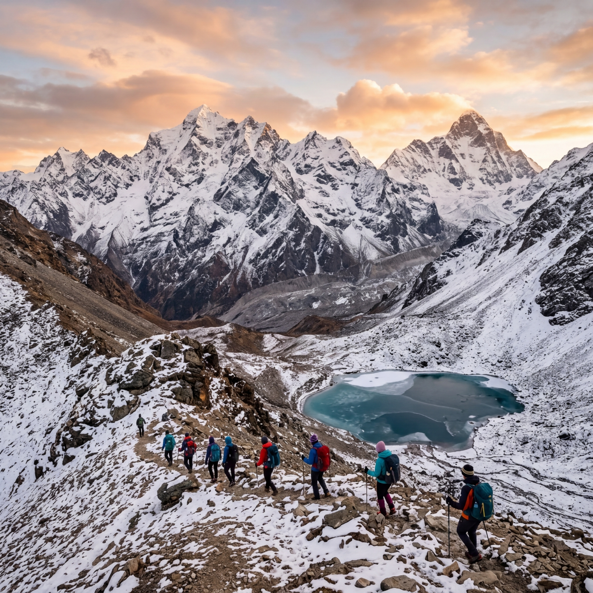

Roopkund Trek
Description
The Roopkund Trek in the Himalayas is one of the most iconic Himalayan adventures, famously known for the mystery of the "Skeleton Lake." Tucked away at 16,000 feet within the Nanda Devi Biosphere Reserve, this trek provides a unique blend of eerie legends and profound natural beauty.
Trekkers travel through some of the largest high-altitude meadows in Asia, Ali and Bedni Bugyal, which offer front-row seats to the massive Mt. Trishul and Nanda Ghunti peaks. The trail winds through dense forests of oak and rhododendron, eventually ascending into alpine zones where the landscape transforms into a dramatic, rocky wonderland.
Itinerary
Basecity to Lohajung
Approx 300km drive, 10-11 hours through scenic mountain roads.
Lohajung to Didna Village
7km trek, 5 hours. Experience the lush forest and Neel Ganga River.
Didna Village to Ali Bedni Bugyal
9km trek, 6 hours. One of the largest high-altitude meadows in Asia.
Ali Bedni Bugyal to Patar Nachuni
6km trek, 4 hours. Gradual ascent with stunning vistas.
Patar Nachuni to Bhagwabasa
6km trek via Kaluva Vinayak Temple. Reach the high camp.
Bhagwabasa to Roopkund & Back
8 hours trek. Reach the mysterious glacial lake.
Patar Nachuni to Wan/Lohajung
12km trek, 14km drive. Descending through forests.
Lohajung to Dehradun
Return drive to the capital.
Includes & Excludes
- Accommodation (Camping/Homestay)
- Veg Meals
- Permits
- Professional Guide
- Trek Gear
- Personal expenses
- Personal luggage carrying
- Emergency evacuation
- Insurance
Photo Gallery
